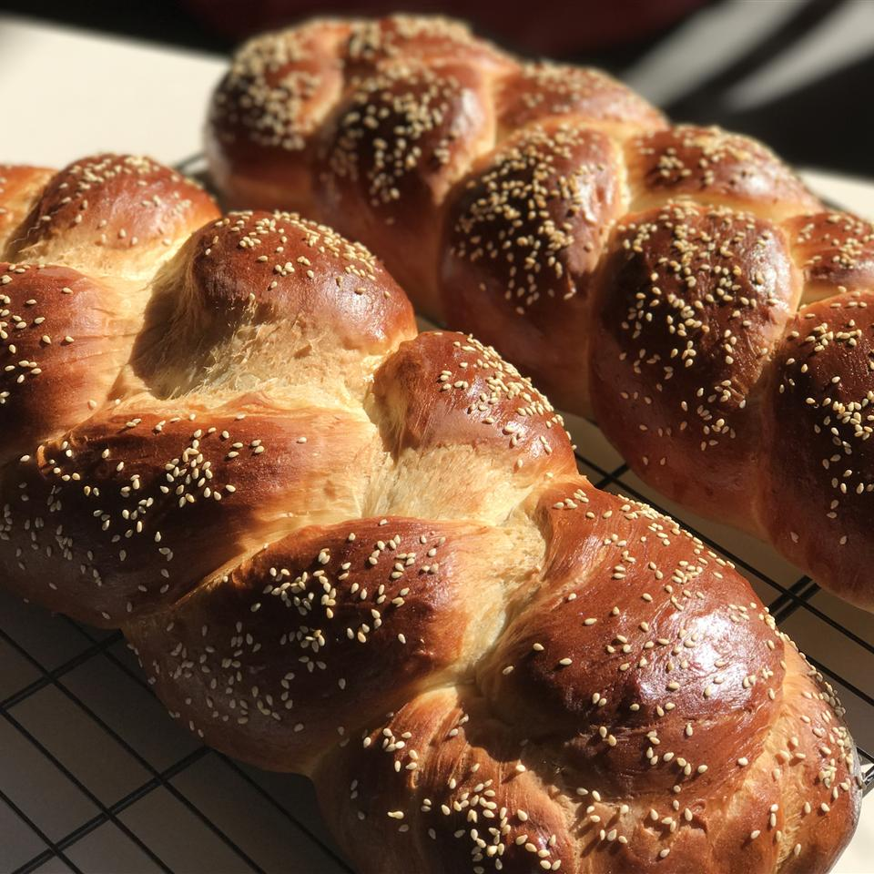

Challah Bread
Home

Challah bread is a traditional egg bread for the Jewish Sabbath.
It's braided and topped with poppy seeds for a beautiful presentation.
Ingredients
- 2½ cups warm water (110 degrees F/45 degrees C)
- 1 tablespoon active dry yeast
- ½ cup honey
- 4 tablespoons vegetable oil
- 3 eggs, divided
- 1 tablespoon salt
- 8 cups unbleached all-purpose flour
- 1 tablespoon poppy seeds (Optional)
Steps
- Pour warm water into a large bowl; sprinkle yeast over water. Let stand until yeast softens and begins to form a creamy foam, about 5 minutes.
- Beat in honey, oil, 2 eggs, and salt. Add flour, 1 cup at a time, beating after each addition until dough has pulled together; turn it out onto a lightly floured surface and knead until smooth and elastic. Place dough in a large, lightly-oiled bowl and turn to coat. Cover with a towel and let rise in a warm place until doubled in volume, about 1 1/2 hours.Beat in honey, oil, 2 eggs, and salt. Add flour, 1 cup at a time, beating after each addition until dough has pulled together; turn it out onto a lightly floured surface and knead until smooth and elastic. Place dough in a large, lightly-oiled bowl and turn to coat. Cover with a towel and let rise in a warm place until doubled in volume, about 1 1/2 hours.
- Punch down dough and turn onto a lightly floured surface. Divide in half and knead each half for 5 minutes or so, adding flour as needed to keep it from getting sticky. Divide each half into thirds and roll into a long snake about 1 1/2 inches in diameter. Pinch the ends of the three snakes together firmly and braid from middle. Either leave as a braid or form into a round braided loaf by bringing ends together, curving the braid into a circle, and pinching ends together. Grease two baking trays and place the finished braid or round on each. Cover with a towel and let rise for about 1 hour.
- reheat the oven to 375 degrees F (190 degrees C). Beat the remaining egg and brush a generous amount over each braid; sprinkle with poppy seeds.
- Bake in preheated oven until golden brown, about 40 minutes. Cool on a wire rack for at least one hour before slicing.